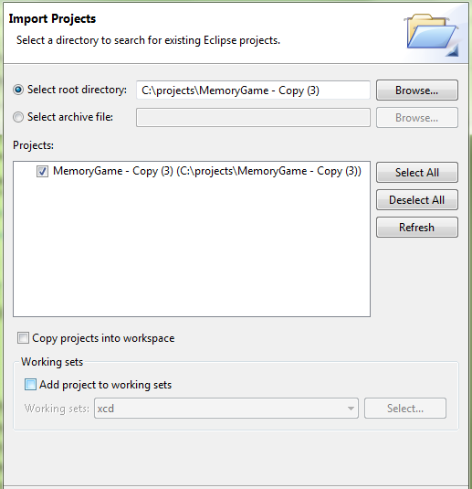

Import Existing Project
If you have an Existing project and you want to import it to your workspace, you will need to do the following steps:
- Click on File -> Import
- Click on General -> Existing Projects into Workspace
- Choose the directory where your project located

- Click on Finish to terminate